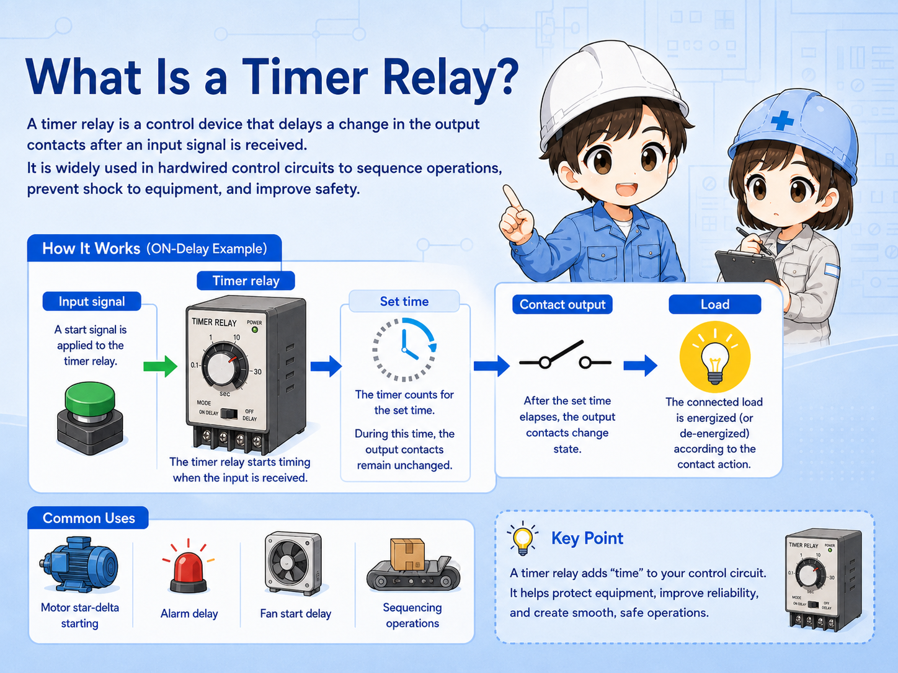
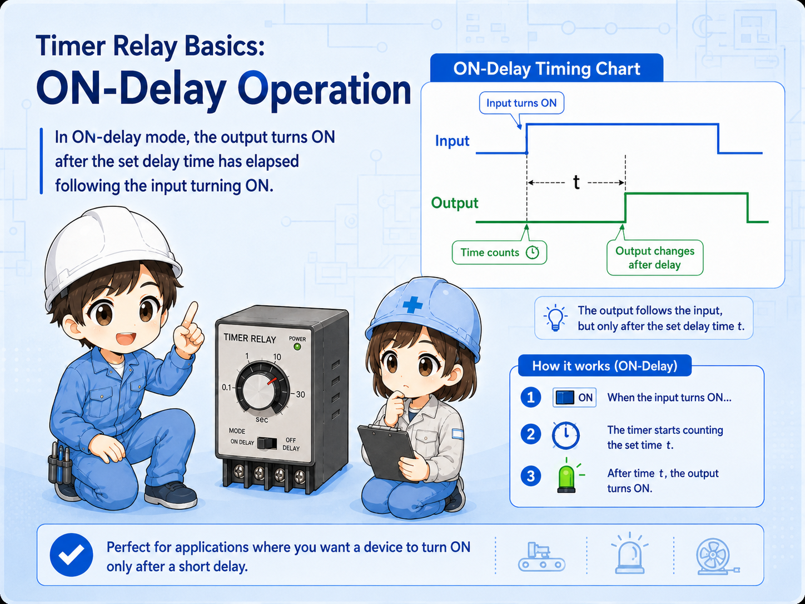
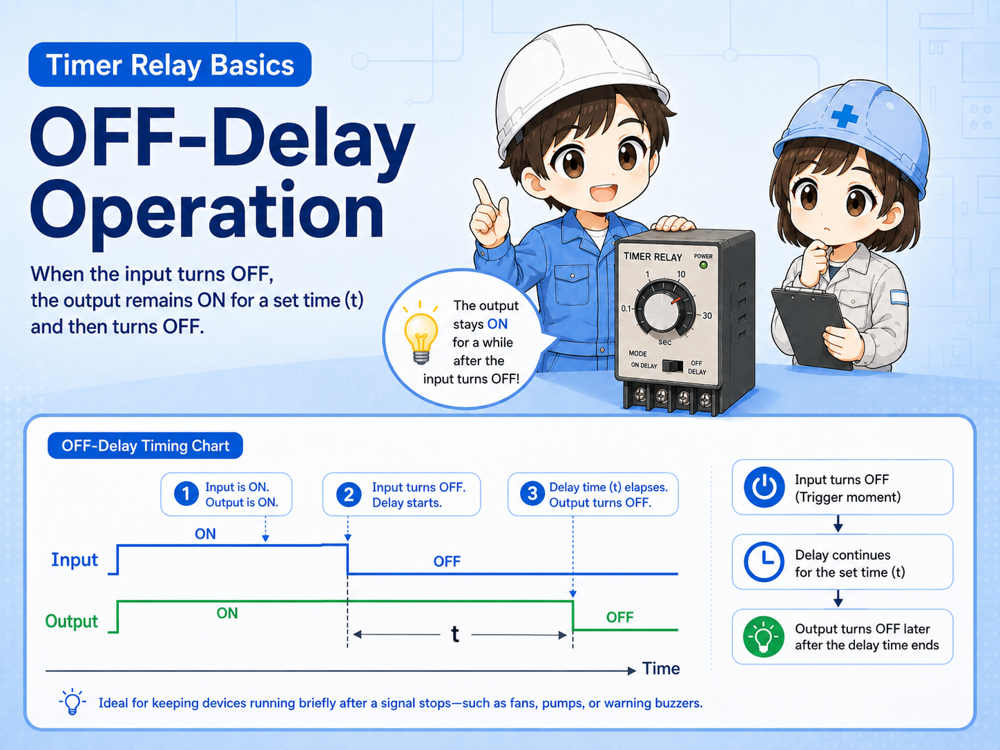
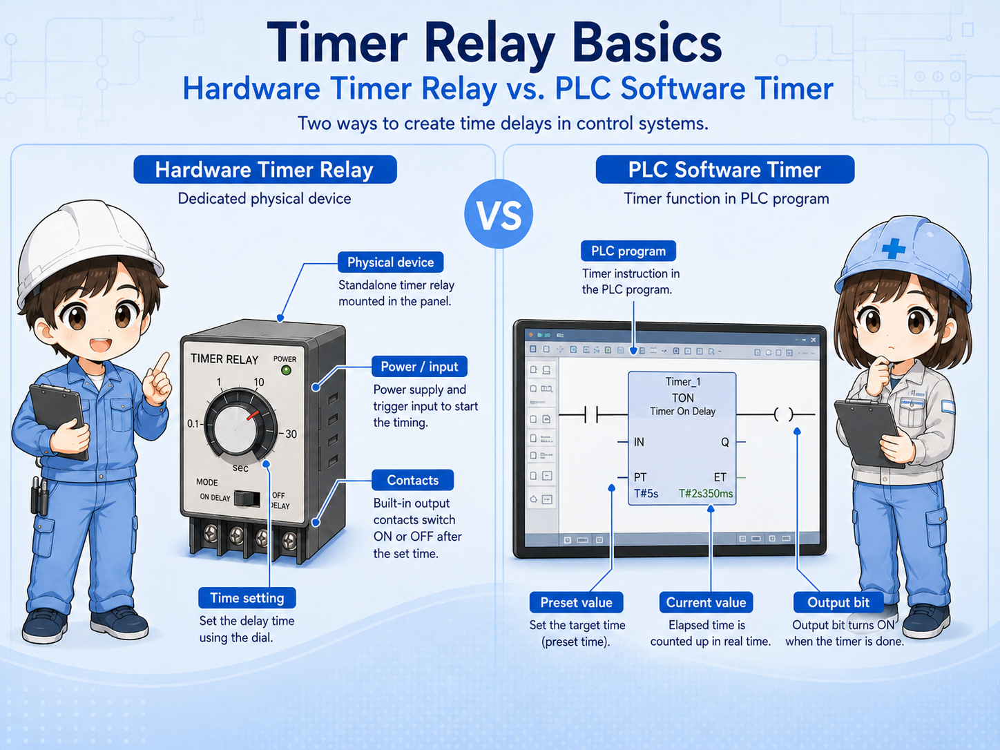
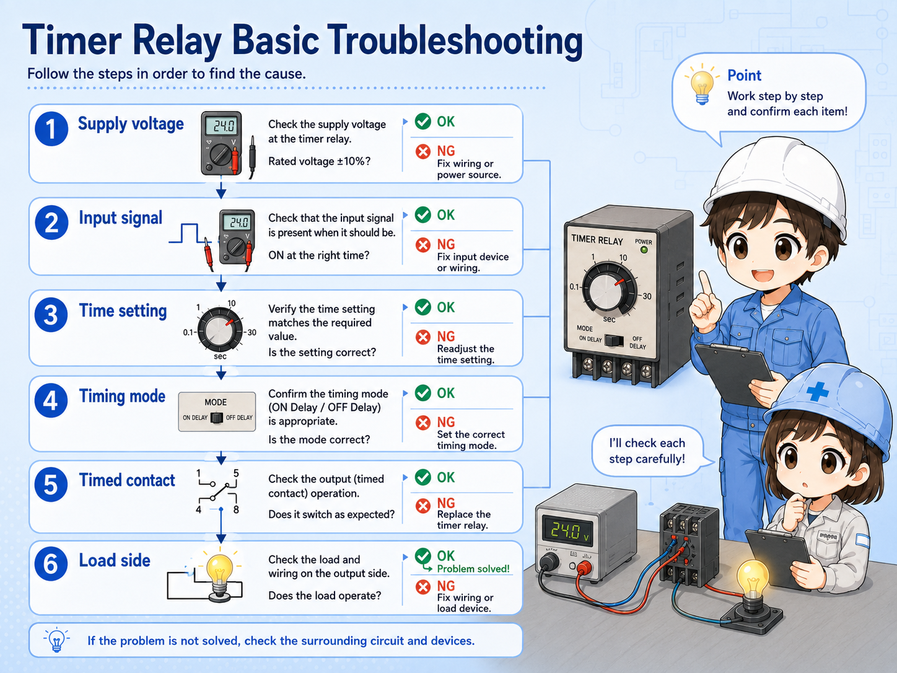

Good for you if
- You see timer relays in hardwired control panels.
- You want to understand ON-delay and OFF-delay differences.
- You need a simple field-check order before replacing a timer.
A practical guide to hardwired timer relays, the difference between ON-delay and OFF-delay operation, PLC timer differences, and troubleshooting points in control panels.
A timer relay is a hardwired control component that changes its contacts based on a time condition.
In a normal relay, the contact state changes almost immediately when the coil is energized or de-energized. A timer relay adds a time condition between the input signal and the contact change.
This makes it useful when a machine needs a short waiting time, a delayed start, a delayed stop, or a sequence that must not happen immediately.

The most important first check is whether the timer is ON-delay, OFF-delay, flicker, interval, or another timing mode.
An ON-delay timer starts counting when its input or coil is energized. After the set time has elapsed, the timed contact changes state.
For example, if the timer is set to 5 seconds, the output contact does not change immediately when the start signal enters. It changes after the 5-second delay.

The timer receives power or a start signal.
The timer waits for the preset time.
The timed contact switches after the delay.
An OFF-delay timer behaves differently. The output contact may change when the input is on, but when the input turns off, the output stays in its timed state for a set period before returning.
This is often used when something should continue for a short time after the command disappears, such as keeping a fan, lamp, or relay output active briefly after a stop condition.

Many timing troubles come from confusing ON-delay and OFF-delay operation. Always check the timing chart printed on the timer or in the manual.
A hardware timer relay is a physical device in the panel. A PLC software timer is an instruction inside the PLC program. Both can create time-based behavior, but the checking method is different.
With a hardware timer, you check the supply voltage, dial or setting value, contact terminals, timing mode, and output contact state. With a PLC timer, you check the program condition, timer current value, preset value, and output bit.

| Point | Hardware timer relay | PLC software timer |
|---|---|---|
| Where it exists | Physical device in the control panel. | Instruction and data inside the PLC program. |
| Typical check | Power, setting dial, mode, terminals, contacts. | Input condition, preset value, current value, output bit. |
| Field caution | Wrong timing range or mode can cause confusion. | Program condition may not be true even if the device is normal. |
When you find a timer relay in a panel, do not start by turning the dial. First identify what signal drives the timer and what contact the timer output controls.
Look for the coil or input terminals, the timed contacts, the selected timing range, and the wiring destination. This helps you understand whether the timer is controlling a lamp, relay, contactor, valve, or PLC input.
Which signal energizes or starts the timer?
Which contact changes after the set time?
Is the scale seconds, minutes, or another range?
Does the selected mode match the expected operation?
When a timer relay does not operate as expected, split the problem into input, timing, contact output, and load side. This avoids replacing the timer before checking the circuit around it.


Before replacing the timer, check whether the input signal is actually reaching it and whether the timing mode matches the circuit.

So I should check the input, time setting, contact output, and load side step by step instead of judging only from the delay behavior.
Confirm the timer has the correct rated voltage.
Check whether the start signal or coil signal is present.
Confirm seconds/minutes scale and selected operation mode.
Measure whether the output contact changes after the set time.
A timer relay is a practical hardwired component that changes contacts based on a time condition. It is often used when a control circuit needs a delay before starting, a delay before stopping, or a clear time-based sequence.
The key beginner point is to separate ON-delay and OFF-delay behavior. Then check the supply voltage, input condition, timing range, operation mode, timed contact, and load side in order.
Timer relay troubleshooting is not only “is the timer broken?” It is “did the timer receive the right signal, count the right time, and switch the right contact?”